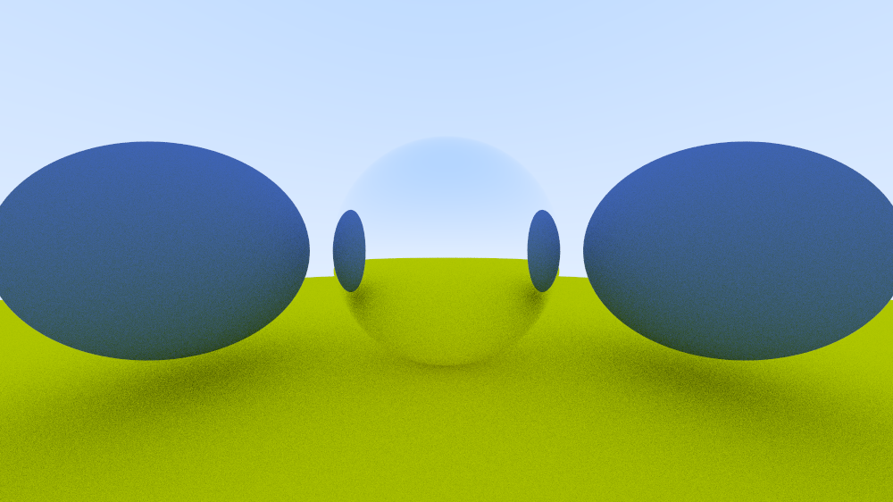
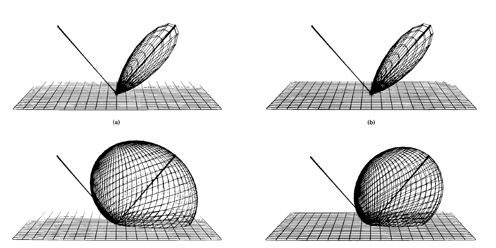

the rendering equation
what's in a image?
by titus nguyen
the rendering equation

$L_{\text{o}}(\mathbf x, \omega_{\text{o}}, \lambda, t) = L_{\text{e}}(\mathbf x, \omega_{\text{o}}, \lambda, t) + L_{\text{r}}(\mathbf x, \omega_{\text{o}}, \lambda, t)$
$L_{\text{r}}(\mathbf x, \omega_{\text{o}}, \lambda, t) = {\int_\Omega} f_{\text{r}}(\mathbf x, \omega_{\text{i}}, \omega_{\text{o}}, \lambda, t) L_{\text{i}}(\mathbf x, \omega_{\text{i}}, \lambda, t) (\omega_{\text{i}}\cdot\mathbf n) \operatorname d \omega_{\text{i}}$
$L_{\text{r}}(\mathbf x, \omega_{\text{o}}, \lambda, t) = {\Large\color{red} \int_\Omega} f_{\text{r}}(\mathbf x, \omega_{\text{i}}, \omega_{\text{o}}, \lambda, t) L_{\text{i}}(\mathbf x, \omega_{\text{i}}, \lambda, t) (\omega_{\text{i}}\cdot\mathbf n) \operatorname d \omega_{\text{i}}$
light out = the continuous sum of every reflected light ray from inside the hemisphere
$L_{\text{r}}(\mathbf x, \omega_{\text{o}}, \lambda, t) = L_{\text{i}}(\mathbf x, \omega_{\text{i}}, \lambda, t)$
$L_{\text{r}}(\mathbf x, \omega_{\text{o}}, \lambda, t) = L_{\text{i}}(\mathbf x, \omega_{\text{i}}, \lambda, t)$
what is a $f_{\text{r}}(\mathbf x, \omega_{\text{i}}, \omega_{\text{o}}, \lambda, t)$?
ref: Cook and Torrence, 1982
what is our $f_{\text{r}}(\mathbf x, \omega_{\text{i}}, \omega_{\text{o}}, \lambda, t)$?

ref: Shirley, 2018
$L_{\text{r}}(\mathbf x, \omega_{\text{o}}, \lambda, t) = {\int_\Omega} f_{\text{r}}(\mathbf x, \omega_{\text{i}}, \omega_{\text{o}}, \lambda, t) L_{\text{i}}(\mathbf x, \omega_{\text{i}}, \lambda, t) \operatorname d \omega_{\text{i}}$
$L_{\text{r}}(\mathbf x, \omega_{\text{o}}, \lambda, t) = \frac{1}{\Omega_n}\sum_{n=1}^{\Omega} c L_{\text{i}}(\mathbf x, \omega_{\text{i}}, \lambda, t)$
RECALL
$L_{\text{r}}(\mathbf x, \omega_{\text{o}}, \lambda, t) = {\int_\Omega} f_{\text{r}}(\mathbf x, \omega_{\text{i}}, \omega_{\text{o}}, \lambda, t) L_{\text{i}}(\mathbf x, \omega_{\text{i}}, \lambda, t) {\Large\color{red}(\omega_{\text{i}}\cdot\mathbf n)} \operatorname d \omega_{\text{i}}$
RECALL
$L_{\text{r}}(\mathbf x, \omega_{\text{o}}, \lambda, t) = {\int_\Omega} f_{\text{r}}(\mathbf x, \omega_{\text{i}}, \omega_{\text{o}}, \lambda, t) L_{\text{i}}(\mathbf x, \omega_{\text{i}}, \lambda, t) {\Large\color{red}(\omega_{\text{i}}\cdot\mathbf n)} \operatorname d \omega_{\text{i}}$

$L_{\text{r}}(\mathbf x, \omega_{\text{o}}, \lambda, t) = \frac{1}{\Omega_n}\sum_{n=1}^{\Omega} c L_{\text{i}}(\mathbf x, \omega_{\text{i}}, \lambda, t)$
$L_{\text{r}}(\mathbf x, \omega_{\text{o}}, \lambda, t) = \frac{1}{\Omega_n}\sum_{n=1}^{\Omega} c L_{\text{i}}(\mathbf x, \omega_{\text{i}}, \lambda, t)(\omega_{\text{i}}\cdot\mathbf n)$
render by random sampling our integral
$L_{\text{r}}(\mathbf x, \omega_{\text{o}}, \lambda, t) = {\int_\Omega} f_{\text{r}}(\mathbf x, \omega_{\text{i}}, \omega_{\text{o}}, \lambda, t) L_{\text{i}}(\mathbf x, \omega_{\text{i}}, \lambda, t) (\omega_{\text{i}}\cdot\mathbf n) \operatorname d \omega_{\text{i}} = $

perfectly cloudy, blue sky; two perfectly diffuse surfaces
$L_{\text{r}}(\mathbf x, \omega_{\text{o}}, \lambda, t) = {\int_\Omega} f_{\text{r}}(\mathbf x, \omega_{\text{i}}, \omega_{\text{o}}, \lambda, t) L_{\text{i}}(\mathbf x, \omega_{\text{i}}, \lambda, t) (\omega_{\text{i}}\cdot\mathbf n) \operatorname d \omega_{\text{i}} = $
what's in a image?
what's in a image?
1920 x 1080 x 500 rays/pxl x 500 rays/ray